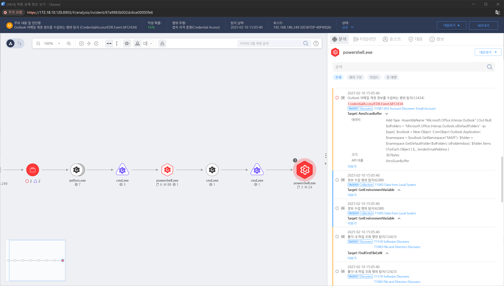

Account Discovery Email Account
XXXX
windows
| name | type | description | default |
|---|---|---|---|
| local_path | Path | windows files path | C:\Users\Public\ |
| email_file | Path | extract_emails.txt | |
| resultemailfile | Path | result_emails.txt | |
| search_folder | Path | search root folder | C:\ |
powershell
echo T1087.003.01_prereq_command_Start
echo T1087.003.01 prereq no items to check
echo T1087.003.01_prereq_command_Success
echo T1087.003.01_prereq_command_End
powershell
echo T1087.003.01_get_prereq_command_Start
echo T1087.003.01 no actions to take
echo T1087.003.01_get_prereq_command_Fail
echo T1087.003.01_get_prereq_command_End
Exit 1
powershell
echo T1087.003.01_command_Start
Try{
cmd.exe /c 'cmd.exe /c powershell -Command "Add-Type -AssemblyName \"Microsoft.Office.Interop.Outlook\" | Out-Null; $olFolders = \"Microsoft.Office.Interop.Outlook.olDefaultFolders\" -as [type]; $outlook = New-Object -ComObject Outlook.Application; $namespace = $outlook.GetNamespace(\"MAPI\"); $folder = $namespace.GetDefaultFolder($olFolders::olFolderInbox); $folder.Items | ForEach-Object { $_.SenderEmailAddress }" > "#{local_path}#{email_file}"'
$filePath = "#{local_path}"+"#{email_file}"
$resultfilePath = "#{local_path}"+"#{result_email_file}"
$emailPattern = '[a-zA-Z0-9._%+-]+@[a-zA-Z0-9.-]+\.[a-zA-Z]{2,}'
$fileContent = Get-Content -Path $filePath -Raw
$matches = [regex]::Matches($fileContent, $emailPattern)
$matches | ForEach-Object { $_.Value } | Out-File -FilePath $resultfilePath
}
Catch{
echo T1087.003.01_command_Fail
echo T1087.003.01_command_End
Exit 1
}
echo T1087.003.01_command_Success
echo T1087.003.01_command_End
Exit 0
powershell
echo T1087.003.01_cleanup_command_Start
$filePath = "#{local_path}"+"#{email_file}"
$resultfilePath = "#{local_path}"+"#{result_email_file}"
Try {
RD $filePath -force
RD $resultfilePath -force
}
Catch {
echo T1087.003.01_cleanup_command_Fail
echo T1087.003.01_cleanup_command_End
Exit 1
}
echo T1087.003.01_cleanup_command_Success
echo T1087.003.01_cleanup_command_End
Exit 0
Action 실행 전 필요한 정보 목록과 실행 후 얻게되는 정보 목록
| Information |
|---|
| reserved |
| Information |
|---|
| reserved |
| Version | GUID |
|---|---|
| 1.0.1 | 644A0C18-12DA-455E-BD1B-92C739F1AC5B |
MITRE ATT&CK 액션을 기준으로 대응 방안을 작성

일반 사용자가 AD에서 이메일 계정 목록을 조회하지 못하도록 권한 제한
Exchange Server, LDAP, Office 365 등에서 "Address Book Policy (ABP)" 적용하여 사용자 간 무분별한 이메일 주소 조회 차단
Get-Recipient, Get-Mailbox, ldapsearch 등의 명령어 사용 권한 제한
SMTP, IMAP, POP3 등의 프로토콜에 대해 접근 통제 (예: VPN을 통해서만 접속 허용)
SMTP 릴레이 제한 및 이메일 서버의 비정상적인 트래픽 탐지 활성화
DKIM, SPF, DMARC 정책 적용하여 스푸핑 공격 방지
사용자들에게 피싱 및 소셜 엔지니어링 공격에 대한 교육 실시
이메일 보안 솔루션(예: Microsoft Defender for Office 365, Proofpoint) 적용하여 피싱 및 악성 이메일 차단
이메일 내 링크 및 첨부 파일 실행 전 URL 분석 및 샌드박스 검증 수행
MFA (Multi-Factor Authentication) 필수 적용
비밀번호 정책 강화 (최소 12자 이상, 주기적 변경 요구)
기업 도메인 이메일 계정이 유출되었는지 "Have I Been Pwned" 등에서 정기적으로 확인
Action 실행시 함께 영향을 받는 다른 Techniqes
| Techniques |
|---|
| T1087.003 |